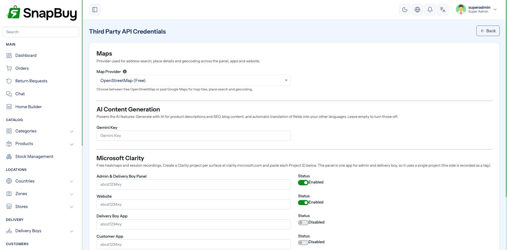

Map & API Keys
Setup Guide step 7 of 9. Menu path: Settings → API Credentials
Maps do real work in SnapBuy, not decoration:
- Customers pick their delivery address on a map
- You draw zone polygons on a map
- You drop the store pin on a map
- Road distance between store and customer sets the quick-channel delivery charge

Choose a provider
| Provider | Cost | Address autocomplete | Setup |
|---|---|---|---|
| OpenStreetMap | Free | Basic | None — works immediately |
| Google Maps | Paid, with a monthly free credit | Excellent | Two API keys, billing enabled |
SnapBuy defaults to OpenStreetMap, and distance is measured with the public OSRM routing service.
Start on OpenStreetMap
It needs no keys, no billing and no Google account, and the Setup Guide's Map step completes the moment you select it. Switch to Google later if address search quality becomes a problem.
OpenStreetMap uses a shared public routing service
Distance lookups go to the public OSRM demo server. It is free and unauthenticated, but it is rate-limited and offers no uptime guarantee. On a store doing serious order volume, move to Google Maps or host your own OSRM instance — otherwise busy periods can produce "unable to fetch distance" at checkout.
Using Google Maps
Google needs two separate keys. This trips people up constantly.
| SnapBuy field | Google API | Used for |
|---|---|---|
| Map API Key | Maps JavaScript API | Rendering the map tiles you see when drawing zones and pinning stores |
| Place API Key | Places API, Places API (New), Geocoding API, Distance Matrix API | Address search, autocomplete, and measuring the store-to-customer distance that sets the quick-channel delivery charge |
Distance Matrix belongs to the Place key, not the Map key
SnapBuy sends the Distance Matrix request using the Place API Key. Enabling Distance Matrix against the Map key only — or restricting the Place key to Places and Geocoding — leaves the map working perfectly while every delivery-charge lookup fails.
The symptom is "unable to fetch distance" at checkout on a panel where the maps clearly render fine.
Both keys are required
The Setup Guide marks the Map step complete only when both the Map key and the Place key are filled. Entering one leaves the step red — and address autocomplete or distance calculation will be broken depending on which is missing.
Create the keys
- Open console.cloud.google.com.
- Create a project, or select one.
- Enable billing — Google refuses Maps requests without a billing account, even inside the free credit.
- Go to APIs & Services → Library and enable:
- Maps JavaScript API
- Places API
- Places API (New)
- Geocoding API
- Distance Matrix API
- Directions API
- Go to APIs & Services → Credentials → Create credentials → API key.
- Create two keys and name them clearly.
Places API and Places API (New) are listed as two separate services in the Library and are not interchangeable. SnapBuy calls the legacy Places endpoints, so Places API must be enabled, while Google Cloud projects created recently only surface Places API (New). Enable both. If your project shows only one of the two, enable what is available and then test address search before going live — this is a common reason autocomplete returns nothing on an otherwise correct setup.
Billing must be enabled
Without a billing account every Google Maps request fails and the map area renders grey with a "for development purposes only" watermark. Google applies a recurring monthly credit that covers small stores, but the account must still exist.
Restrict the keys
An unrestricted Maps key found in your page source can be used by anyone, billed to you.
Map API Key — restrict by HTTP referrer:
https://admin.yourstore.com/*
https://yourstore.com/*Place API Key — restrict by API, limited to Places, Places (New), Geocoding and Distance Matrix.
Restrict, but test afterwards
Over-restricting is the second most common Maps problem. After adding restrictions, reload the panel and confirm the zone map still draws — then place a test order to an address a few kilometres from the store and check the delivery charge is calculated. The map drawing correctly does not prove the Place key can still reach Distance Matrix.
Restriction changes can take a few minutes to take effect.
Set a budget alert
In Billing → Budgets & alerts, create a budget with email alerts. It will not stop charges, but you find out about a spike in hours rather than at the end of the month.
Switching providers later
Changing the provider is safe — existing zone polygons and store pins are stored as coordinates, not provider data, so they carry over.
After switching, visit /clear and reload the panel.
Test a real address after switching
Delivery charge depends on the distance lookup. After changing providers, place a test order to an address a few kilometres from the store and confirm the charge is sane.
AI text generation key (optional)
The same page has a Gemini Key field. It is unrelated to maps.
With a Google Gemini API key entered, the panel can generate text for you — product descriptions and blog content — from a short prompt.
| Field | Notes |
|---|---|
| Gemini Key | From aistudio.google.com/app/apikey |
Leave it blank to disable the feature. Nothing else depends on it.
Generated text still needs review
AI-written product copy can be confidently wrong about specifications, ingredients or compliance claims. Treat it as a first draft and check it before publishing.
Troubleshooting
| Symptom | Cause | Fix |
|---|---|---|
| Setup Guide Map step stays red | Provider is Google but only one key filled | Fill both Map and Place keys |
| Grey map with a watermark | Billing not enabled on the Google project | Enable billing |
| "This page can't load Google Maps correctly" | Required API not enabled, or key restricted too tightly | Enable the APIs; check referrer restrictions |
| Map loads, address search does nothing | Places API (New) not enabled, Places API not enabled, or Place key missing | Enable both Places services; fill the Place key |
| "Unable to fetch distance" at checkout, but maps render fine | Distance Matrix not enabled, or the Place key is restricted to Places/Geocoding only | Enable Distance Matrix and allow it on the Place API Key |
| "Unable to fetch distance" on OpenStreetMap | Public OSRM routing service rate-limited | Switch to Google Maps, or host your own OSRM |
| Delivery charges wrong after switching provider | Cached config | Visit /clear and retest |
| Unexpected Google bill | Unrestricted key in use elsewhere | Restrict by referrer and regenerate the key |
Checklist
- Provider chosen
- If Google: billing enabled, all six APIs enabled (including Places API (New))
- If Google: both Map and Place keys entered
- Distance Matrix enabled and allowed on the Place API Key
- Keys restricted by referrer/API
- Budget alert configured
- Zone map draws correctly
- Test address returns a sensible delivery charge